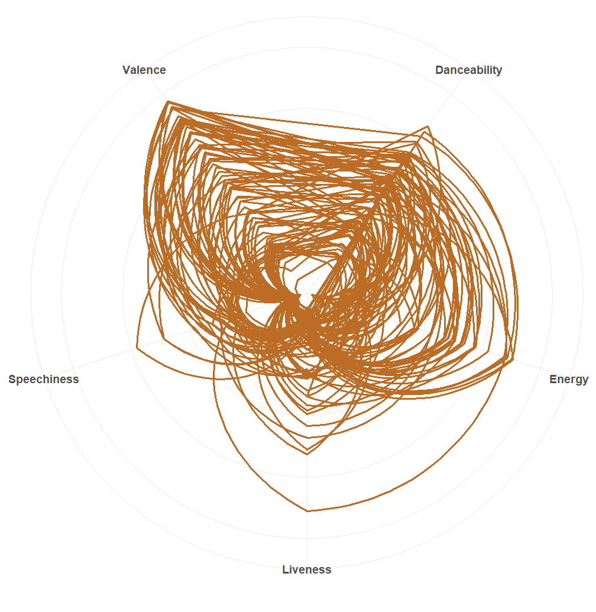

Welcome to the Boomer Generation, a time when individuals born between 1946 and 1964 witnessed and shaped pivotal moments in history. From the post-World War II economic boom to the Civil Rights Movement, from the Cuban Missile Crisis to the first Moon landing, these years were marked by significant social, cultural, and political events that defined an era.
During the Boomer era, these were the most popular music genres...
| Genre | Count |
|---|---|
| Blues | 2 |
| Country | 8 |
| Doo-Wop | 1 |
| Folk | 1 |
| Jazz | 18 |
| Pop | 48 |
| R&B | 2 |
| Rock | 9 |
| Rock and Roll | 6 |
From these top words and their associated emotions, we can glean insights into prevalent themes and sentiments that reverberated throughout the Boomer generation, reflecting the cultural, social, and emotional landscape of that era. Notably, the top two emotions, Fear and Joy, wielded influence over significant events during that time, including the end of World War II, the Civil Rights Movement, the Space Race, and the assassination of President John F. Kennedy
Each generation exhibits a diverse array of music genres, each with distinct characteristics such as valence, danceability, speechiness, energy, and liveness. These traits offer insight into the unique sound and feel of the music that defined each era
The Boomer Generation, as reflected in its music genres, demonstrates a consistent pattern characterized by high valence and energy, while showing relatively lower emphasis on liveness and speechiness
Examining the sentiment scores of the Boomer generation throughout the years provides insights into the emotional trends, with attention to their minimum, maximum, and average ranges. For instance, the sentiment score hit its lowest point in 1956 during the Montgomery Bus Boycott, while reaching its peak in 1961 during the inauguration of President John F. Kennedy.
Within the Boomer Generation, the top three songs of the era with the highest positive sentiment scores are...
| Song | Artist | Year Released | Sentiment Score |
|---|---|---|---|
| Michael | The Highwaymen | 1961 | 1.78 |
| I Beg of You | Elvis Presley | 1958 | 1.42 |
| That Lucky Old Sun | Frankie Laine | 1949 | 1.32 |
Within the Boomer Generation, the top three songs of the era with lowest negative sentiment scores are...
| Song | Artist | Year Released | Sentiment Score |
|---|---|---|---|
| Be My Love | Mario Lanza | 1951 | -0.84 |
| Rhythm of the Rain | The Cascades | 1963 | -0.49 |
| That Lucky Old Sun | Frankie Laine | 1949 | 1.32 |